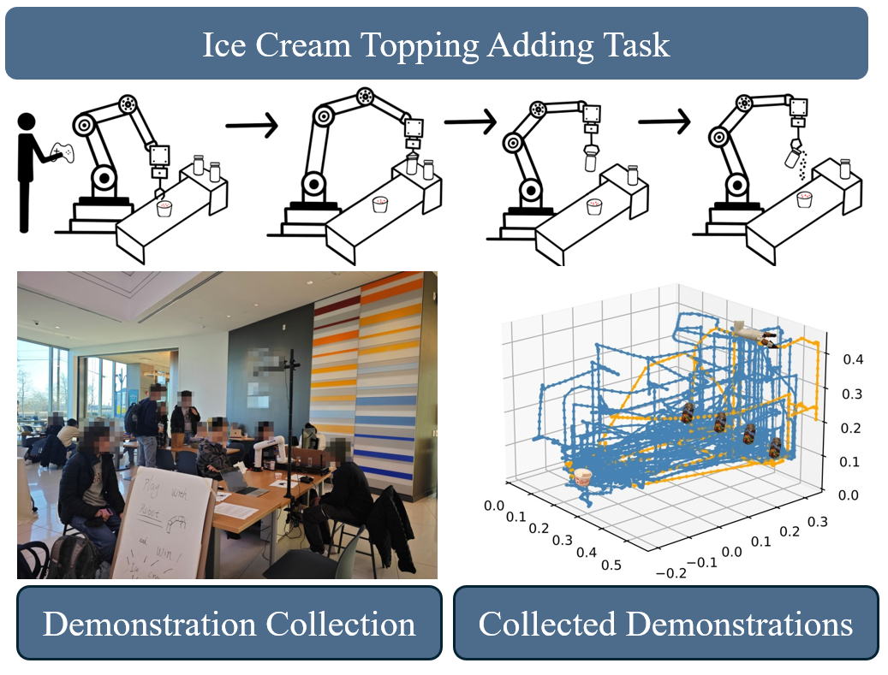
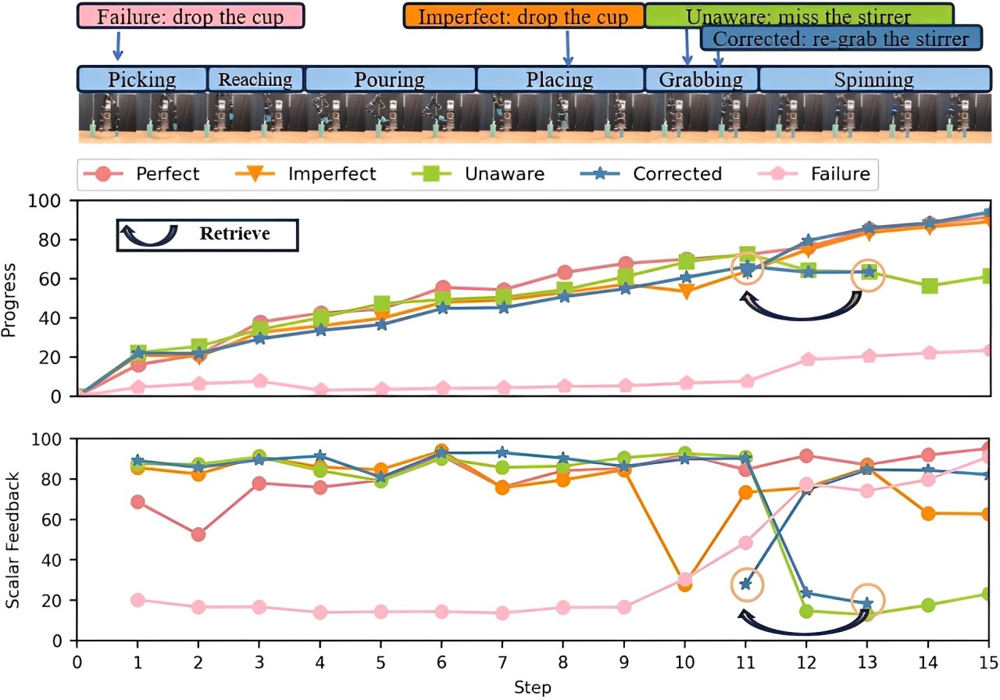
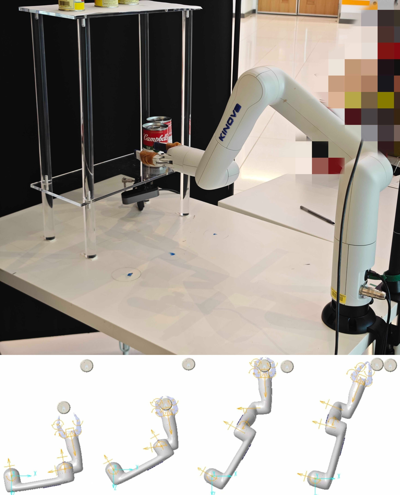
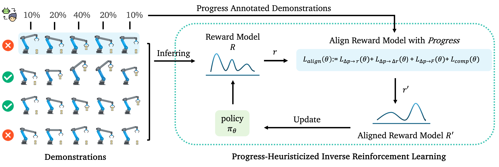
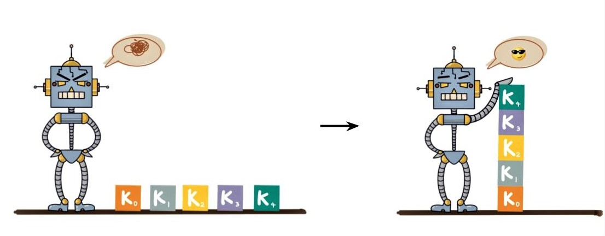
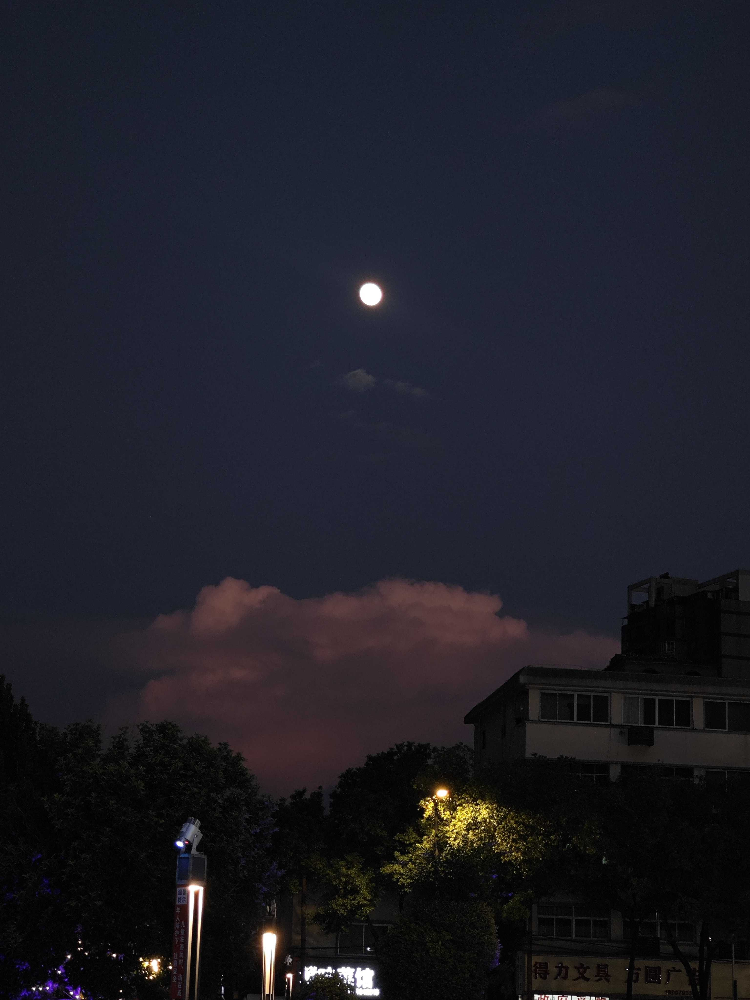

Hang Yu (余航)
Ph.D. Candidate, Tufts University. My research focuses on Human–Robot Interaction (HRI), human-in-the-loop learning, RLHF, and Imitation Learning.
About & Interests
Interactive RL • Learning from Human Feedback • Learning from Demonstrations • Human modeling for robot learning • Evaluation & datasets for HRI
HRI, RLHF/RLAIF, IntRL, Preference learning, Human factors
I am a Ph.D. candidate in Computer Science at Tufts University, advised by Dr. Elaine Short in the Assistive Agent and Behavior Learning lab (AABL). I work on improving robot learning from multi-modular human teaching, including human feedback, human demonstrations, and outputs from VLM/LLM. Most of my data is open-sourced and collected from public spaces with real-world non-expert users.

News
Co-authored three papers with my mentees at IEEE RO-MAN 2025.
Selected for the Doctoral Consortium: "Enabling Robust Learning from Non-Experts" at IEEE ICRA 2025.
Recipient of the Student Travel Award at IEEE RO-MAN 2024.
Published "From 'Thumbs Up' to '10 out of 10'" at IEEE/RSJ IROS 2023.
Publications
Conference Papers


Journal Publications

Top-K Interesting Preference Rules Mining Based on MaxClique

Contextual Preference Collaborative Measure Framework Based on Belief System

Conditional Preference Mining Based on MaxClique
Workshops & Doctoral Consortium

Doctoral Consortium: Human-Robot Interaction via Expressive Human Feedback

PHIRL: Progress-Heuristicized Inverse Reinforcement Learning

Active Feedback Learning with Rich Feedback
Education
GPA 4.0/4.0 — Expected Mar. 2026
Advisor: Dr. Elaine Schaertl Short
GPA 3.95/4.0 — Jan. 2021
Advisor: Dr. Elaine Schaertl Short
Experience & Service
- Ethics for AI, Robotics, and HRI — Spring 2024, Spring 2025
- Human–Robot Interaction — Fall 2022
- Human–Computer Interaction — Spring 2021
- C++ Programming — Fall 2016
- HRI (2021–2024)
- ICRA (2023–2025)
- CoRL (2025)
- AAAI (2026 PC)
- AAMAS (2026 PC)
- 2025: ICRA Doctoral Consortium
- 2024: RO-MAN Travel Grant
- 2017: Yantai University Outstanding Student Scholarship
- 2016: Lanqiao Programming Competition National First Prize
A Little More about Me




Contact
Email: hyu08@tufts.edu
Google Scholar: Profile